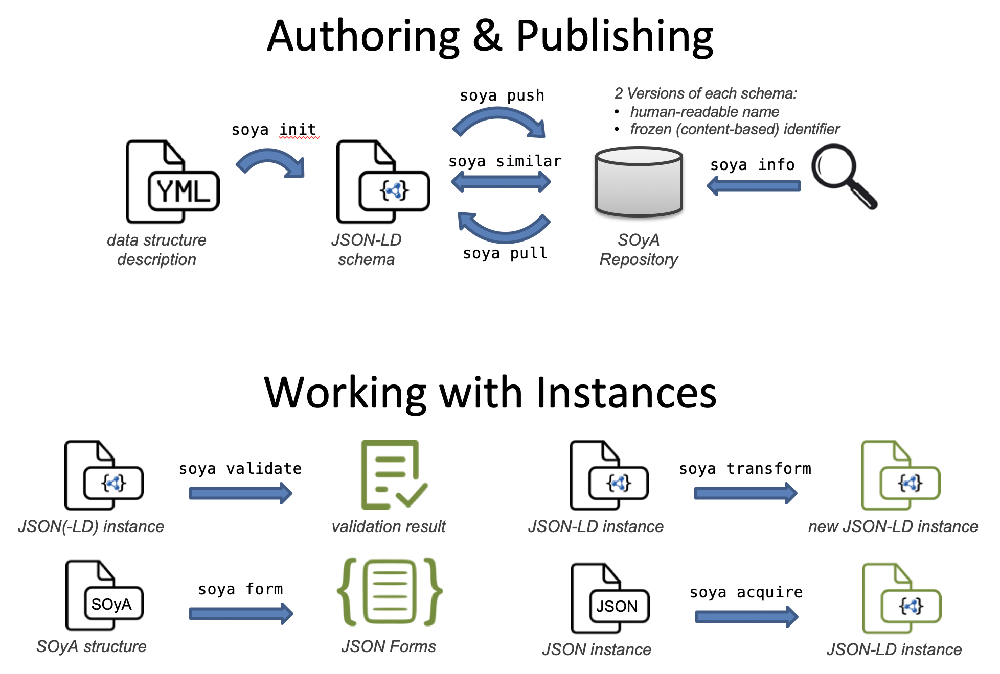

Draft recommendations for data model authoring and publishing platform
Status of this document
This specification is not a W3C Standard nor is it on the W3C Standards Track. Learn more about W3C Community and Business Groups. GitHub Issues are preferred for discussion of this specification.
History
Version 0.1: 19 October 2021 (initial draft, link)
Version 0.2: 28 January 2022 (current version)
1. Introduction
SOyA is a data model authoring and publishing platform and also provides functionalities for validation and transformation. It includes a command line tool and an online repository for hosting these data models.
 Figure 1: Building blocks in SOyA
1.1. Terminology
This document uses the following terms as defined in external specifications and defines terms specific to SOyA.
Attribute
in a base a single field with a name and associated type
in RDF: a single data type or object property
1.2. Design Goals and Rationale
SOyA satisfies the following design goals:
2. Reference Implementation
Work in progress as part of a research project funded by the “IKT der Zukunft” program from the Federal Ministry for Transport, Innovation and Technology in Austria – FFG Projekt 887052.
Conformance
Document conventions
Conformance requirements are expressed
with a combination of descriptive assertions
and RFC 2119 terminology.
The key words “MUST”, “MUST NOT”, “REQUIRED”, “SHALL”, “SHALL NOT”, “SHOULD”, “SHOULD NOT”, “RECOMMENDED”, “MAY”, and “OPTIONAL”
in the normative parts of this document
are to be interpreted as described in RFC 2119.
However, for readability,
these words do not appear in all uppercase letters in this specification.
All of the text of this specification is normative
except sections explicitly marked as non-normative, examples, and notes. [RFC2119]
Examples in this specification are introduced with the words “for example”
or are set apart from the normative text
with class="example",
like this:
This is an example of an informative example.
Informative notes begin with the word “Note”
and are set apart from the normative text
with class="note",
like this:
Note, this is an informative note.
Conformant Algorithms
Requirements phrased in the imperative as part of algorithms
(such as "strip any leading space characters"
or "return false and abort these steps")
are to be interpreted with the meaning of the key word
("must", "should", "may", etc)
used in introducing the algorithm.
Conformance requirements phrased as algorithms or specific steps
can be implemented in any manner,
so long as the end result is equivalent.
In particular, the algorithms defined in this specification
are intended to be easy to understand
and are not intended to be performant.
Implementers are encouraged to optimize.